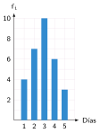
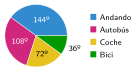
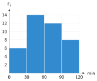

📝 Repaso de la unidad
Actividades de repaso
Escribe tu respuesta y después pulsa «Ver la solución» para corregirla tú. Los puntos dicen el nivel: ● básico, ●●● ampliación.
- La opinión de los españoles sobre un programa de televisión.
- Las notas de los alumnos de una clase.
- La duración de las pilas que fabrica una empresa.
Solución
- Muestra.
- Población.
- Muestra.
¿Cómo te ha ido?
- Marca de móvil.
- Número de mensajes al día.
- Peso de la mochila.
- Nota de Inglés (de 0 a 10, sin decimales).
- Medio de transporte para ir al instituto.
- Tiempo que se tarda en hacer los deberes.
Solución
a) Cualitativa b) Discreta c) Continua d) Discreta e) Cualitativa f) Continua
¿Cómo te ha ido?
- Número de goles marcados en un partido.
- Tiempo que se tarda en correr 100 m.
- Marca del teléfono móvil.
- Talla de camiseta (S, M, L, XL).
- Peso de un recién nacido.
Solución
a) Cuantitativa discreta. b) Cuantitativa continua. c) Cualitativa. d) Cualitativa. e) Cuantitativa continua.
¿Cómo te ha ido?
Para conocer el tiempo que dedican al deporte los 600 alumnos de un instituto de Torrelavega, se pregunta a 80 de ellos. ¿Qué variable se estudia y de qué tipo es?
Solución
Población: los 600 alumnos. Muestra: los 80 alumnos encuestados. Individuo: cada alumno. Variable: tiempo dedicado al deporte, cuantitativa continua.
¿Cómo te ha ido?
- Color del pelo.
- Número de primos.
- Temperatura del agua del mar.
- Equipo de fútbol favorito.
- Número de calzado.
- Lugar de nacimiento.
Solución
a) Cualitativa. b) Cuantitativa. c) Cuantitativa. d) Cualitativa. e) Cuantitativa. f) Cualitativa.
¿Cómo te ha ido?
- Número de habitantes de un municipio.
- Longitud de un río.
- Número de páginas de un libro.
- Litros de lluvia caídos en un día.
- Número de asignaturas aprobadas.
- Velocidad de un coche.
Solución
a) Discreta. b) Continua. c) Discreta. d) Continua. e) Discreta. f) Continua.
¿Cómo te ha ido?
- Estación del año preferida.
- Número de hermanos.
- Estatura en metros.
- Nota de Matemáticas (de 0 a 10, sin decimales).
Solución
Por ejemplo: a) Verano, invierno. b) 0, 2. c) \(1{,}58\); \(1{,}63\). d) 4, 9.
¿Cómo te ha ido?
- La calidad de las latas de anchoas de una conservera de Santoña.
- La estatura de los jugadores de un equipo de baloncesto.
- La intención de voto en unas elecciones autonómicas.
- El número de hermanos de los alumnos de tu clase.
Solución
a) Muestra (las latas abiertas no se pueden vender). b) Población. c) Muestra. d) Población.
¿Cómo te ha ido?
Escribe dos variables cualitativas, dos cuantitativas discretas y dos cuantitativas continuas que se puedan estudiar sobre los alumnos de tu clase.
Solución
Respuesta abierta. Por ejemplo: color de ojos y deporte favorito; número de hermanos y número de mascotas; estatura y peso.
¿Cómo te ha ido?
Diseña una encuesta para tu clase con una pregunta sobre una variable cualitativa y otra sobre una variable cuantitativa. Recoge los datos, organízalos en una hoja de cálculo y representa cada variable con el gráfico más adecuado.
Solución
Respuesta abierta.
¿Cómo te ha ido?
Un ayuntamiento quiere saber cuántas horas a la semana usan la bici sus vecinos. Para ello pregunta a 200 personas a la salida de un gimnasio.
- ¿Cuál es la población? ¿Y la muestra?
- ¿Es representativa la muestra? ¿Por qué?
Solución
a) Población: todos los vecinos del municipio. Muestra: las 200 personas encuestadas. b) No: quienes salen de un gimnasio hacen más deporte que el resto de vecinos.
¿Cómo te ha ido?
- Para saber el deporte favorito de los alumnos del colegio, se pregunta solo a los del equipo de fútbol.
- Para conocer la opinión de los vecinos sobre el horario del autobús, se pregunta a las 9 de la mañana en la parada.
- Para saber cuánto leen los jóvenes, se encuesta a la salida de la biblioteca.
Solución
a) Los del equipo preferirán el fútbol más que el resto. b) Solo se pregunta a quienes usan el autobús a esa hora. c) Quienes van a la biblioteca leen más que los demás.
¿Cómo te ha ido?
Una fábrica de Reinosa produce 12 000 piezas al día. Para controlar su calidad, se revisan 150 piezas elegidas al azar.
- ¿Cuál es la población? ¿Y la muestra?
- ¿Qué porcentaje de la producción se revisa?
- Si 3 piezas de la muestra son defectuosas, ¿cuántas piezas defectuosas cabe esperar en un día?
Solución
a) Población: las 12 000 piezas. Muestra: las 150 revisadas. b) El \(1{,}25\) %. c) El 2 %: unas 240 piezas.
¿Cómo te ha ido?
En la ficha de cada socio de un club de remo de Pedreña aparecen: edad (en años cumplidos), peso, puesto en la trainera, número de regatas ganadas, tiempo en recorrer 500 m y provincia de nacimiento.
Solución
Edad: discreta. Peso: continua. Puesto: cualitativa. Regatas ganadas: discreta. Tiempo: continua. Provincia: cualitativa.
¿Cómo te ha ido?
La edad de una persona se puede dar en años cumplidos o con toda precisión (años, días, horas…). ¿Qué tipo de variable es en cada caso? ¿Y la nota de un examen si se pone con un decimal?
Solución
En años cumplidos, discreta; con toda precisión, continua. La nota con un decimal es discreta: toma valores aislados (\(6{,}1\); \(6{,}2\)…).
¿Cómo te ha ido?
Para elegir el destino de la excursión de fin de curso, el delegado pregunta a sus cinco mejores amigos.
- ¿Es una buena muestra? ¿Por qué?
- En 2.º hay 100 alumnos repartidos en cuatro clases de 25. ¿Cómo elegirías una muestra representativa de 20 alumnos?
Solución
a) No: sus amigos pueden tener gustos parecidos a los suyos. b) Por ejemplo, 5 alumnos de cada clase elegidos por sorteo.
¿Cómo te ha ido?
Marca V (verdadero) o F (falso). Después justifica tu respuesta.
Solución
a) Verdadero. b) Falso: es cualitativa. c) Falso: es discreta. d) Verdadero.
¿Cómo te ha ido?
Lee el texto y contesta.
Cada diez años, el Instituto Nacional de Estadística (INE) hace un censo: recoge datos de todas las personas que viven en España. En el de 2021, Cantabria tenía unos 585 000 habitantes. Entre un censo y otro, la Encuesta de Población Activa pregunta cada tres meses a los habitantes de unas 65 000 viviendas de toda España si trabajan o buscan empleo.
- ¿El censo estudia una población o una muestra? ¿Y la Encuesta de Población Activa?
- ¿Por qué crees que no se hace un censo cada tres meses?
- Escribe una variable cualitativa y otra cuantitativa que pueda recoger el censo.
Solución
a) El censo, una población; la encuesta, una muestra. b) Porque es muy caro y lleva mucho tiempo. c) Respuesta abierta. Por ejemplo, el lugar de nacimiento y la edad.
¿Cómo te ha ido?
Una revista digital pregunta a sus lectores: «¿Usas demasiado el móvil?». Responden 5 000 personas y el 80 % dice que no. La revista titula: «El 80 % de los españoles no abusa del móvil». Señala dos problemas de este estudio.
Solución
La muestra no es representativa: solo responden lectores de la revista que quieren hacerlo. Además, la pregunta es subjetiva: no mide el tiempo de uso.
¿Cómo te ha ido?
En un instituto hay 240 alumnos de 1.º, 210 de 2.º, 180 de 3.º y 170 de 4.º. Se quiere elegir una muestra de 80 alumnos en la que cada curso tenga la misma proporción que en el instituto. ¿Cuántos alumnos se eligen de cada curso?
Solución
24 de 1.º, 21 de 2.º, 18 de 3.º y 17 de 4.º.
¿Cómo te ha ido?
Lucía quiere saber cuál es el animal favorito de los 600 alumnos del colegio. Pregunta a los 25 de su clase y 12 eligen el lobo. Concluye: «Casi la mitad de los alumnos del colegio prefiere el lobo».
- ¿Qué porcentaje de su muestra elige el lobo?
- ¿Es válida su conclusión? ¿Qué le aconsejarías?
Solución
a) El 48 %. b) No: su clase no representa a todo el colegio. Debería preguntar a alumnos de todos los cursos elegidos al azar.
¿Cómo te ha ido?
Las notas de un examen han sido: 7, 5, 8, 6, 7, 9, 4, 7, 8, 6, 5, 7, 10, 6, 7. Haz la tabla de frecuencias absolutas, relativas y acumuladas.
Solución
\(f_i\): 4 (1), 5 (2), 6 (3), 7 (5), 8 (2), 9 (1), 10 (1). \(N=15\). \(F_i\): 1, 3, 6, 11, 13, 14, 15. \(h_i\): \(0{,}07\); \(0{,}13\); \(0{,}20\); \(0{,}33\); \(0{,}13\); \(0{,}07\); \(0{,}07\).
¿Cómo te ha ido?
En una campaña de donación de sangre, de 50 donantes, 21 son del grupo A, 6 del B, 2 del AB y 21 del 0.
Solución
A: \(0{,}42\) (42%); B: \(0{,}12\) (12%); AB: \(0{,}04\) (4%); 0: \(0{,}42\) (42%).
¿Cómo te ha ido?
Se ha preguntado a 25 alumnos cuántos libros leyeron en verano.
| Libros | \(f_i\) | \(F_i\) | \(h_i\) |
| 0 | 3 | ||
| 1 | 7 | ||
| 2 | 8 | ||
| 3 | 5 | ||
| 4 | 2 |
Solución
\(F_i\): 3, 10, 18, 23, 25. \(h_i\): \(0{,}12\); \(0{,}28\); \(0{,}32\); \(0{,}20\); \(0{,}08\).
¿Cómo te ha ido?
Color favorito de 25 alumnos: azul, rojo, verde, azul, negro, azul, rojo, verde, azul, rojo, azul, negro, verde, azul, rojo, azul, verde, rojo, azul, negro, azul, rojo, verde, azul, negro.
Solución
Azul: 10; \(0{,}40\); 40 %. Rojo: 6; \(0{,}24\); 24 %. Verde: 5; \(0{,}20\); 20 %. Negro: 4; \(0{,}16\); 16 %.
¿Cómo te ha ido?
Se ha pedido a 40 alumnos que valoren el comedor del colegio de 1 a 5.
| Valoración | \(f_i\) | \(F_i\) | \(h_i\) | % |
| 1 | 2 | |||
| 2 | 6 | |||
| 3 | 12 | |||
| 4 | 14 | |||
| 5 | 6 |
Solución
\(F_i\): 2, 8, 20, 34, 40. \(h_i\): \(0{,}05\); \(0{,}15\); \(0{,}30\); \(0{,}35\); \(0{,}15\). %: 5, 15, 30, 35, 15.
¿Cómo te ha ido?
| \(x_i\) | 0 | 1 | 2 | 3 | 4 |
| \(F_i\) | 6 | 15 | 27 | 34 | 40 |
Solución
\(f_i\): 6, 9, 12, 7, 6. \(N=40\).
¿Cómo te ha ido?
- \([10,20)\)
- \([0,5)\)
- \([1{,}50;\,1{,}60)\)
- \([45,60)\)
Solución
a) 15. b) \(2{,}5\). c) \(1{,}55\). d) \(52{,}5\).
¿Cómo te ha ido?
En una clase de 25 alumnos, el 36 % tiene mascota. ¿Cuántos alumnos tienen mascota? ¿Cuál es la frecuencia relativa de los que no la tienen?
Solución
9 alumnos. \(0{,}64\).
¿Cómo te ha ido?
Se ha preguntado a 20 alumnos cuántos minutos tardan en llegar al instituto:
| Minutos | \([0,10)\) | \([10,20)\) | \([20,30)\) | \([30,40)\) |
| \(f_i\) | 5 | 9 | 4 | 2 |
- Completa la tabla con las marcas de clase, los porcentajes y las frecuencias acumuladas.
- Dibuja el histograma.
- Calcula la media usando las marcas de clase.
Solución
- Marcas: 5, 15, 25, 35. Porcentajes: 25, 45, 20, 10. \(F_i\): 5, 14, 18, 20.
- Histograma.
- \(\bar{x}=16{,}5\) min
¿Cómo te ha ido?
Lanza un dado 30 veces y escribe los resultados en A1:A30. Escribe los números del 1 al 6 en C1:C6 y, en D1, =CONTAR.SI($A$1:$A$30;C1); arrastra hasta D6. En E1 escribe =D1/30.
- ¿Cuánto deben sumar las frecuencias absolutas? ¿Y las relativas?
- Calcula la media y la desviación media con
=PROMEDIO(A1:A30)y=DESVPROM(A1:A30). - ¿A qué valor debería acercarse la media si lanzaras el dado muchísimas veces?
Solución
a) 30 y 1. b) Respuesta abierta. c) A \(3{,}5\).
¿Cómo te ha ido?
Los pesos (en kg) de 20 alumnos son: 42, 48, 51, 39, 55, 46, 44, 58, 50, 47, 53, 41, 49, 45, 56, 52, 43, 48, 54, 50. Agrúpalos en los intervalos \([35,40)\), \([40,45)\), \([45,50)\), \([50,55)\) y \([55,60)\) y haz la tabla con \(f_i\), \(F_i\) y porcentajes.
Solución
\(f_i\): 1, 4, 6, 6, 3. \(F_i\): 1, 5, 11, 17, 20. %: 5, 20, 30, 30, 15.
¿Cómo te ha ido?
Número de veces que han ido al cine en el último mes 50 personas:
| \(x_i\) | \(f_i\) | \(F_i\) | \(h_i\) |
| 0 | 8 | 8 | |
| 1 | 20 | ||
| 2 | 15 | ||
| 3 | |||
| 4 | 5 | 50 |
Solución
\(f_i\): 8, 12, 15, 10, 5. \(F_i\): 8, 20, 35, 45, 50. \(h_i\): \(0{,}16\); \(0{,}24\); \(0{,}30\); \(0{,}20\); \(0{,}10\).
¿Cómo te ha ido?
En una tabla de frecuencias, el valor 3 tiene frecuencia absoluta 6 y frecuencia relativa \(0{,}15\).
- ¿Cuántos datos hay en total?
- Si el valor 5 tiene frecuencia relativa \(0{,}35\), ¿cuál es su frecuencia absoluta?
Solución
a) \(N=40\). b) 14.
¿Cómo te ha ido?
Marcos ha hecho esta tabla con 20 datos:
| \(x_i\) | 1 | 2 | 3 | 4 |
| \(f_i\) | 3 | 5 | 8 | 4 |
| \(h_i\) | 0,3 | 0,5 | 0,8 | 0,4 |
¿Qué ha hecho mal? Corrige las frecuencias relativas.
Solución
Ha dividido entre 10 y no entre 20: las \(h_i\) deben sumar 1. \(h_i\): \(0{,}15\); \(0{,}25\); \(0{,}40\); \(0{,}20\).
¿Cómo te ha ido?
En una hoja de cálculo tienes los valores \(x_i\) en A2:A6 y las frecuencias absolutas en B2:B6.
- ¿Qué fórmula escribirías en B7 para obtener \(N\)?
- ¿Y en C2 para la frecuencia relativa, de forma que se pueda arrastrar hasta C6?
- ¿Cómo calcularías las frecuencias acumuladas en la columna D?
Solución
a) =SUMA(B2:B6). b) =B2/$B$7. c) En D2, =B2; en D3, =D2+B3, y se arrastra hasta D6.
¿Cómo te ha ido?
Minutos que esperan 50 pacientes en las urgencias de un centro de salud:
| Minutos | \([0,15)\) | \([15,30)\) | \([30,45)\) | \([45,60)\) | \([60,75)\) |
| \(f_i\) | 12 | 18 | 11 | 6 | 3 |
- Calcula las marcas de clase, los porcentajes y las frecuencias acumuladas.
- ¿Qué porcentaje de pacientes espera menos de media hora? ¿Y 45 minutos o más?
Solución
a) Marcas: \(7{,}5\); \(22{,}5\); \(37{,}5\); \(52{,}5\); \(67{,}5\). %: 24, 36, 22, 12, 6. \(F_i\): 12, 30, 41, 47, 50. b) El 60 %. El 18 %.
¿Cómo te ha ido?
Se ha contado el número de ocupantes de 50 coches que entran en Santander por la autovía: 22 coches llevan 1 persona, 15 llevan 2, 7 llevan 3, 4 llevan 4 y 2 llevan 5.
- Haz la tabla con \(f_i\), \(h_i\), porcentajes y \(F_i\).
- ¿Cuántos coches llevan como mucho 2 personas? ¿Qué porcentaje lleva más de 2?
Solución
a) \(h_i\): \(0{,}44\); \(0{,}30\); \(0{,}14\); \(0{,}08\); \(0{,}04\). %: 44, 30, 14, 8, 4. \(F_i\): 22, 37, 44, 48, 50. b) 37 coches. El 26 %.
¿Cómo te ha ido?
Los minutos que dedican a leer cada día 24 alumnos son: 5, 12, 30, 45, 8, 20, 25, 35, 15, 0, 10, 40, 22, 18, 28, 48, 3, 29, 14, 27, 38, 9, 16, 24. Agrúpalos en intervalos de amplitud 10 empezando en 0, haz la tabla con \(f_i\) y \(F_i\) y calcula qué porcentaje de alumnos lee al menos 30 minutos.
Solución
\([0,10)\), \([10,20)\), \([20,30)\), \([30,40)\), \([40,50)\). \(f_i\): 5, 6, 7, 3, 3. \(F_i\): 5, 11, 18, 21, 24. El 25 %.
¿Cómo te ha ido?
En una encuesta, la frecuencia relativa de la respuesta «sí» es \(0{,}40\), la de «no» es \(0{,}45\) y el resto responde «no sabe». Si 18 personas no saben, ¿cuántas personas respondieron a la encuesta? ¿Cuántas dijeron que sí?
Solución
120 personas. 48 dijeron que sí.
¿Cómo te ha ido?
- ¿Puede una frecuencia relativa ser mayor que 1?
- ¿Puede la última frecuencia absoluta acumulada ser distinta de \(N\)?
- ¿Pueden dos valores seguidos de una tabla tener la misma frecuencia acumulada?
Solución
a) No, porque \(f_i\) nunca es mayor que \(N\). b) No, siempre vale \(N\). c) Sí, si el segundo tiene frecuencia absoluta 0.
¿Cómo te ha ido?
- Deporte favorito de los alumnos de una clase.
- Estaturas de 30 alumnos agrupadas en intervalos.
- Número de hermanos de los alumnos.
- Parte del presupuesto familiar que se dedica a cada gasto.
Solución
a) Barras o sectores. b) Histograma. c) Barras. d) Sectores.
¿Cómo te ha ido?
El gráfico muestra cuántos días a la semana entrenan los alumnos de un club de fútbol.

- ¿Cuántos alumnos entrenan 3 días?
- ¿Cuántos alumnos tiene el club?
- ¿Cuántos entrenan más de 3 días?
Solución
a) 10. b) 30. c) 9.
¿Cómo te ha ido?
Dibuja el diagrama de barras de la fruta favorita de 25 alumnos: manzana 8, plátano 5, naranja 4, fresa 7 y kiwi 1.
Solución
Cinco barras separadas de alturas 8, 5, 4, 7 y 1.
¿Cómo te ha ido?
Las frecuencias relativas de cuatro valores son \(0{,}50\); \(0{,}25\); \(0{,}15\) y \(0{,}10\).
Solución
180º, 90º, 54º y 36º.
¿Cómo te ha ido?
- 90º
- 36º
- 180º
- 72º
Solución
a) 25 %. b) 10 %. c) 50 %. d) 20 %.
¿Cómo te ha ido?
En una encuesta a 40 personas sobre su red social favorita, 14 eligen la A, 10 la B, 8 la C y el resto la D. Calcula los ángulos para el diagrama de sectores.
Solución
A 126º, B 90º, C 72º, D 72º.
¿Cómo te ha ido?
De los 40 alumnos de 2º, 18 vienen andando al instituto, 10 en autobús, 8 en coche y 4 en bici. Calcula el ángulo de cada sector y dibuja el diagrama de sectores.
Solución
162º, 90º, 72º y 36º.
¿Cómo te ha ido?
En una encuesta, el 45% de las familias tiene perro, el 30% gato, el 15% otra mascota y el 10% ninguna. Calcula los grados de cada sector para hacer un diagrama de sectores.
Solución
Perro, 162º; gato, 108º; otra, 54º; ninguna, 36º.
¿Cómo te ha ido?
Las ventas de bicicletas eléctricas en una tienda han sido: 800 en 2019, 1 100 en 2020, 1 500 en 2021, 2 100 en 2022 y 2 600 en 2023.
- Calcula el porcentaje de aumento de cada año respecto al anterior.
- ¿En qué año aumentaron más en porcentaje? ¿Y en número de bicis?
Solución
a) 2020: 37,5%; 2021: 36,4%; 2022: 40%; 2023: 23,8%. b) En 2022, en porcentaje y en número.
¿Cómo te ha ido?
El diagrama muestra cómo vienen al colegio los 30 alumnos de una clase.

¿Cuántos alumnos utilizan cada medio de transporte? ¿Qué porcentaje viene andando?
Solución
Andando, 12; autobús, 9; coche, 6; bici, 3. El 40 %.
¿Cómo te ha ido?
El histograma muestra los minutos que estudian al día 40 alumnos.

- Haz la tabla de frecuencias.
- ¿Cuántos alumnos estudian menos de una hora?
- ¿Qué porcentaje estudia hora y media o más?
Solución
a) \([0,30)\): 6; \([30,60)\): 14; \([60,90)\): 12; \([90,120)\): 8. b) 20. c) El 20 %.
¿Cómo te ha ido?
Los goles marcados en 30 partidos han sido: 0 goles en 5 partidos, 1 gol en 9, 2 goles en 8, 3 goles en 5 y 4 goles en 3. Dibuja el diagrama de barras y el polígono de frecuencias.
Solución
Barras de alturas 5, 9, 8, 5 y 3. El polígono une los puntos \((0,5)\), \((1,9)\), \((2,8)\), \((3,5)\) y \((4,3)\).
¿Cómo te ha ido?
De 20 alumnos, 8 prefieren el teatro, 7 el cine y 5 los conciertos. Sara dibuja un diagrama de sectores con ángulos de 40º, 35º y 25º. Explica su error y calcula los ángulos correctos.
Solución
Ha usado los porcentajes como grados y no suman 360º. Teatro, 144º; cine, 126º; conciertos, 90º.
¿Cómo te ha ido?
Un periódico publica un diagrama de barras con el número de parados de un pueblo: 520 en 2022 y 500 en 2023. El eje vertical empieza en 490, así que la barra de 2022 mide 30 unidades y la de 2023, 10.
- ¿Qué impresión da el gráfico?
- ¿Cuánto ha bajado el paro realmente, en porcentaje?
Solución
a) Que el paro se ha reducido a la tercera parte. b) Un \(3{,}8\) % aproximadamente.
¿Cómo te ha ido?
En una hoja de cálculo, al seleccionar una tabla y elegir Insertar \(\to\) Gráfico, aparecen varios tipos: columnas, barras, circular, líneas…
- ¿Qué tipo eliges para comparar el número de alumnos que prefiere cada deporte?
- ¿Y para ver qué parte del total representa cada deporte?
- ¿Cómo conseguirías un histograma a partir de un gráfico de columnas?
Solución
a) Columnas o barras. b) Circular (sectores). c) Quitando la separación entre las columnas.
¿Cómo te ha ido?
En un diagrama de sectores sobre el destino de vacaciones de 60 familias, el sector de «playa» mide 150º, el de «montaña» 120º y el resto es «ciudad». ¿Cuántas familias eligen cada destino?
Solución
Playa, 25; montaña, 20; ciudad, 15.
¿Cómo te ha ido?
Las edades de los socios de una escuela de surf de Somo son: \([10,20)\), 12 socios; \([20,30)\), 18; \([30,40)\), 9; \([40,50)\), 6, y \([50,60)\), 5. Dibuja el histograma. ¿Qué porcentaje de socios tiene menos de 30 años?
Solución
Barras juntas de alturas 12, 18, 9, 6 y 5. El 60 %.
¿Cómo te ha ido?
Lee el texto y contesta.
El Parque de la Naturaleza de Cabárceno ha preguntado a 400 visitantes cómo han llegado: 260 en coche, 80 en autobús de excursión, 40 en autocaravana y el resto en bici o andando. En el folleto del parque se lee: «Dos de cada tres visitantes llegan en coche».
- Haz la tabla con los porcentajes y los ángulos para un diagrama de sectores.
- Dibuja el diagrama de sectores.
- ¿Es exacta la frase del folleto?
Solución
a) Coche: 65 %, 234º. Autobús: 20 %, 72º. Autocaravana: 10 %, 36º. Bici o andando: 5 %, 18º. b) Diagrama. c) No del todo: son el 65 %, algo menos de dos tercios (\(66{,}7\) %).
¿Cómo te ha ido?
- ¿Por qué no tiene sentido un polígono de frecuencias para el color favorito?
- ¿Por qué las barras de un histograma van juntas?
Solución
a) Porque los colores no tienen un orden: unir sus barras no indica nada. b) Porque los intervalos son consecutivos y la variable puede tomar cualquier valor intermedio.
¿Cómo te ha ido?
En un diagrama de sectores, el sector de los alumnos que vienen en bici mide 18º y corresponde a 3 alumnos. ¿Cuántos alumnos hay en total? ¿Cuánto mide el sector de los 25 alumnos que vienen andando?
Solución
60 alumnos. 150º.
¿Cómo te ha ido?
Calcula la media y la mediana de: 3, 5, 5, 6, 8, 9, 10, 10.
Solución
\(\bar{x}=7\); \(Me=7\).
¿Cómo te ha ido?
- \(4, 8, 6, 5, 8, 7, 4, 8\)
- \(15, 12, 18, 12, 13\)
Solución
- \(\bar{x}=6{,}25\); Me \(=6{,}5\); Mo \(=8\); rango 4
- \(\bar{x}=14\); Me \(=13\); Mo \(=12\); rango 6
¿Cómo te ha ido?
- \(1, 2, 2, 3, 7\)
- \(10, 20, 20, 30\)
- \(5, 5, 6, 6, 6, 7, 8, 9\)
- \(0, 0, 1, 3, 4, 4\)
Solución
- \(\bar{x}=3\); Me \(=2\); Mo \(=2\)
- \(\bar{x}=20\); Me \(=20\); Mo \(=20\)
- \(\bar{x}=6{,}5\); Me \(=6\); Mo \(=6\)
- \(\bar{x}=2\); Me \(=2\); Mo \(=0\) y \(4\)
¿Cómo te ha ido?
\(12, 15, 11, 15, 18, 20, 14\)
Solución
Media: \(105 : 7 = 15\). Mediana: 15. Moda: 15. Rango: 9.
¿Cómo te ha ido?
7, 5, 8, 6, 7, 9, 4, 7, 8, 6, 5, 7, 10, 6, 7.
Solución
\(\bar{x}=6{,}8\); \(Me=7\); \(Mo=7\); rango 6.
¿Cómo te ha ido?
En verano, de 25 alumnos, 3 no leyeron ningún libro, 7 leyeron uno, 8 leyeron dos, 5 leyeron tres y 2 leyeron cuatro. Calcula la media, la mediana y la moda del número de libros leídos.
Solución
Media: \(1{,}84\) libros. Mediana: 2. Moda: 2.
¿Cómo te ha ido?
La media de cuatro exámenes de Carlos es 6. ¿Qué nota necesita en el quinto examen para que su media sea 6,5?
Solución
8,5.
¿Cómo te ha ido?
Las estaturas (en cm) de 10 alumnos son: 155, 162, 158, 170, 165, 160, 168, 172, 159, 163. Calcula la media, la mediana y el rango.
Solución
\(\bar{x}=163{,}2\) cm; \(Me=162{,}5\) cm; rango 17 cm.
¿Cómo te ha ido?
En la tabla, \(x_i\) son los goles marcados por partido y \(f_i\) el número de partidos.
| \(x_i\) | 1 | 2 | 3 |
| \(f_i\) | 5 | 3 | 2 |
Bruno calcula la media así: \(\frac{1+2+3}{3}=2\) goles. Explica el error y calcula la media correcta.
Solución
\(\bar{x}=1{,}7\) goles
¿Cómo te ha ido?
Las alturas de 30 alumnos se han agrupado en intervalos:
| Altura (cm) | Alumnos |
| \([150, 155)\) | 4 |
| \([155, 160)\) | 7 |
| \([160, 165)\) | 9 |
| \([165, 170)\) | 6 |
| \([170, 175)\) | 4 |
Calcula la marca de clase de cada intervalo y la altura media.
Solución
Media: \(162{,}3\) cm.
¿Cómo te ha ido?
La nota final de una asignatura se calcula así: los exámenes cuentan un 60%, los trabajos un 30% y la actitud un 10%. Lucía tiene un 6 en exámenes, un 8 en trabajos y un 9 en actitud. ¿Cuál es su nota final?
Solución
\(6{,}9\)
¿Cómo te ha ido?
En GeoGebra escribe datos={3,7,7,2,9,5,7,4} y después Media(datos), Mediana(datos) y Moda(datos).
- Escribe los resultados y compruébalos a mano.
- Añade a la lista un 30. ¿Qué parámetro cambia más?
📐 Ábrelo en GeoGebra Prueba la actividad moviendo los puntos y los deslizadores.
Solución
a) Media \(5{,}5\); mediana 6; moda 7. b) La media, que pasa a \(8{,}2\).
¿Cómo te ha ido?
Lee el texto y contesta.
En casa de Iker son cuatro personas. Han apuntado los metros cúbicos de agua que han gastado cada mes de marzo a agosto: 14, 12, 13, 18, 22 y 17. En verano el consumo sube porque riegan el huerto y se duchan más. La Organización Mundial de la Salud considera que con unos 100 litros por persona y día se cubren las necesidades básicas.
- Calcula el consumo medio mensual y el rango.
- ¿Cuántos litros gasta cada persona al día, de media? Toma meses de 30 días.
- ¿Gastan más o menos de lo que indica la OMS? Propón dos formas de ahorrar agua.
Solución
a) Media: 16 m\(^3\). Rango: 10 m\(^3\). b) 133 litros. c) Más. Respuesta abierta.
¿Cómo te ha ido?
La media de las cinco primeras notas de Irene es un 6. ¿Qué nota tiene que sacar en el sexto examen para que su media suba a 6,5? ¿Podría conseguir una media de 7? Explica tu respuesta.
Solución
Un 9. No.
¿Cómo te ha ido?
Escribe cinco números cuya media sea 10, su mediana 8 y su moda 6.
Solución
Por ejemplo: 6, 6, 8, 13, 17.
¿Cómo te ha ido?
En una clase de 30 alumnos, la nota media de 20 de ellos es \(6{,}5\) y la de los otros 10 es 8. ¿Cuál es la nota media de toda la clase? ¿Por qué no es \(7{,}25\)?
Solución
7
¿Cómo te ha ido?
En una calle se han vendido cinco casas por 150 000, 160 000, 170 000, 180 000 y 1 200 000 €.
- Calcula la media y la mediana.
- Un periódico dice que «el precio medio de la vivienda en esa calle supera los 370 000 €». ¿Qué parámetro describe mejor el precio de una casa normal? ¿Por qué?
Solución
a) Media: 372 000 €. Mediana: 170 000 €. b) La mediana.
¿Cómo te ha ido?
Lee el texto y contesta.
El instituto ha hecho una encuesta a 120 alumnos sobre las horas que usan el móvil al día. Los resultados son: menos de 1 hora, 18 alumnos; de 1 a 2 horas, 36; de 2 a 3 horas, 42; de 3 a 4 horas, 16, y de 4 a 5 horas, 8. Un periódico local publicó el titular: «La mitad de los adolescentes pasa más de tres horas al día con el móvil».
- ¿Qué porcentaje de alumnos usa el móvil más de 3 horas? ¿Es correcto el titular?
- Calcula la media usando las marcas de clase.
- ¿Cuál es el intervalo modal? ¿En qué intervalo está la mediana?
Solución
a) El 20%: es falso. b) \(2{,}17\) horas. c) De 2 a 3 horas.
¿Cómo te ha ido?
En esta tabla falta una frecuencia. Si la media es \(2{,}4\), ¿cuánto vale \(a\)?
| \(x_i\) | 1 | 2 | 3 | 4 |
| \(f_i\) | 4 | \(a\) | 6 | 2 |
Solución
\(a=3\).
¿Cómo te ha ido?
- \(2, 4, 6\)
- \(5, 5, 5, 5\)
- \(1, 5, 9\)
Solución
- Rango 4; \(DM=\frac{4}{3}\approx 1{,}33\)
- Rango 0; \(DM=0\)
- Rango 8; \(DM=\frac{8}{3}\approx 2{,}67\)
¿Cómo te ha ido?
- \(3, 9, 4, 12, 7\)
- \(-2, 5, 0, 8, -4\)
- \(1{,}5;\ 2{,}7;\ 0{,}8;\ 3{,}1\)
Solución
a) 9. b) 12. c) \(2{,}3\).
¿Cómo te ha ido?
Los datos 4, 6, 7, 9, 14 tienen media 8. Calcula la distancia de cada dato a la media y la desviación media.
Solución
Distancias: 4, 2, 1, 1, 6. \(DM=\frac{14}{5}=2{,}8\).
¿Cómo te ha ido?
Las temperaturas mínimas de una semana de enero en Potes fueron 2, \(-1\), 0, 3, 1, \(-2\) y 4 ºC. Calcula la media y el rango.
Solución
Media: 1 ºC. Rango: 6 ºC.
¿Cómo te ha ido?
Calcula la desviación media de los datos 1, 3, 5, 9, 12.
Solución
\(\bar{x}=6\); \(DM=\frac{5+3+1+3+6}{5}=3{,}6\).
¿Cómo te ha ido?
\(3, 5, 8, 10, 14\)
Solución
\(3{,}2\)
¿Cómo te ha ido?
Marca V (verdadero) o F (falso). Después justifica tu respuesta.
No se corrige solo: compruébalo con tu profesor o profesora.
Solución
- Falso.
- Verdadero.
- Verdadero.
¿Cómo te ha ido?
Introduce estos datos en el modo STAT de la calculadora y obtén la media. Después calcula el rango y la desviación media.
23, 27, 25, 30, 22, 28, 26, 24
Solución
\(\bar{x}=25{,}625\); rango 8; \(DM=\frac{17}{8}=2{,}125\).
¿Cómo te ha ido?
Las notas de cinco alumnos de dos grupos han sido: grupo A, 5, 5, 6, 6, 8; grupo B, 2, 4, 6, 8, 10.
- Calcula la media de cada grupo.
- Calcula el rango y la desviación media de cada grupo. ¿Qué grupo es más homogéneo?
Solución
a) Las dos medias valen 6. b) A: rango 3, \(DM = 0{,}8\). B: rango 8, \(DM = 2{,}4\). El A.
¿Cómo te ha ido?
| \(x_i\) | 1 | 2 | 3 | 4 | 5 |
| \(f_i\) | 2 | 3 | 5 | 3 | 2 |
Solución
\(\bar{x}=3\); \(DM=\frac{14}{15}\approx 0{,}93\).
¿Cómo te ha ido?
Iván y Noa han subido cinco veces en bici al Alto de Campoo. Sus tiempos, en minutos, han sido:
- Iván: 52, 55, 50, 53, 50
- Noa: 48, 58, 51, 56, 47
Calcula la media, la mediana, el rango y la desviación media de cada uno. ¿Quién es más regular?
Solución
Iván: media 52, mediana 52, rango 5, \(DM=1{,}6\). Noa: media 52, mediana 51, rango 11, \(DM=4\). Iván es más regular.
¿Cómo te ha ido?
Calcula la media, el rango y la desviación media de 2, 4, 9. Después suma 5 a cada dato y vuelve a calcularlos. ¿Qué ocurre?
Solución
2, 4, 9: media 5, rango 7, \(DM=\frac{8}{3}\approx 2{,}67\). 7, 9, 14: media 10, rango 7, \(DM=\frac{8}{3}\). La media aumenta 5; el rango y la desviación media no cambian.
¿Cómo te ha ido?
Escribe en A1:A10 las edades de los 10 socios de un club de ajedrez juvenil: 12, 14, 13, 15, 12, 16, 13, 14, 12, 19.
- ¿Qué fórmula da el rango usando
MAXyMIN? - Calcula la media, el rango y la desviación media con la hoja y compruébalos a mano.
Solución
a) =MAX(A1:A10)-MIN(A1:A10). b) Media 14, rango 7, \(DM=1{,}6\).
¿Cómo te ha ido?
- \(10, 20, 30, 40, 50\)
- \(28, 29, 30, 31, 32\)
¿Cuál de los dos conjuntos está más disperso?
Solución
a) Media 30, rango 40, \(DM=12\). b) Media 30, rango 4, \(DM=1{,}2\). El primero.
¿Cómo te ha ido?
Las temperaturas máximas de una semana en Astillero fueron 14, 15, 15, 16, 14, 15, 16 ºC, y en Reinosa, 8, 12, 15, 19, 10, 17, 24 ºC. Calcula la media y el rango de cada lugar. ¿Dónde fue más variable la temperatura?
Solución
Astillero: media 15, rango 2. Reinosa: media 15, rango 16. Más variable en Reinosa.
¿Cómo te ha ido?
Ana y Luis han lanzado cinco tandas de dardos cada uno. Sus puntuaciones han sido:
- Ana: 7, 8, 8, 9, 8
- Luis: 10, 6, 9, 5, 10
Calcula la media, el rango y la desviación media de cada uno. ¿Quién es más regular?
Solución
Los dos tienen media 8. Ana: rango 2, \(DM=0{,}4\). Luis: rango 5, \(DM=2\). Ana es más regular.
¿Cómo te ha ido?
- ¿Puede la media ser mayor que todos los datos?
- ¿Puede un conjunto de datos tener dos modas?
- ¿Puede valer 0 el rango? ¿Y la desviación media?
Solución
a) No. b) Sí. c) Sí, los dos.
¿Cómo te ha ido?
Calcula la media, el rango y la desviación media de 1, 3, 8. Después multiplica cada dato por 2 y vuelve a calcularlos. ¿Qué ocurre?
Solución
1, 3, 8: media 4, rango 7, \(DM=\frac{8}{3}\approx 2{,}67\). 2, 6, 16: media 8, rango 14, \(DM=\frac{16}{3}\approx 5{,}33\). Las tres medidas se multiplican por 2.
¿Cómo te ha ido?
Escribe tres conjuntos de cuatro datos con media 5: uno con rango 0, otro con rango 2 y otro con rango 10.
Solución
Por ejemplo: 5, 5, 5, 5; 4, 5, 5, 6; 0, 5, 5, 10.
¿Cómo te ha ido?
Lee el texto y contesta.
Santander tiene un clima oceánico: el mar suaviza las temperaturas y no hay grandes cambios entre el invierno y el verano. Madrid tiene un clima continental, con inviernos fríos y veranos calurosos. Estas son las temperaturas medias (en ºC) de cada mes, de enero a diciembre:
- Santander: 10, 10, 12, 13, 15, 18, 20, 21, 19, 17, 14, 11
- Madrid: 6, 7, 10, 13, 17, 23, 26, 25, 21, 15, 10, 7
- Calcula la temperatura media anual de cada ciudad.
- Calcula el rango y la desviación media de cada ciudad.
- ¿Confirman los datos lo que dice el texto?
Solución
a) Las dos, 15 ºC. b) Santander: rango 11, \(DM\approx 3{,}33\). Madrid: rango 20, \(DM\approx 6{,}17\). c) Sí: tienen la misma media, pero en Madrid las temperaturas están mucho más dispersas.
¿Cómo te ha ido?
🧩 Paso a paso
Así se resuelven los ejercicios tipo de la unidad. Cada bloque es una orden, como en Scratch: los bloques se leen de arriba abajo y los que tienen forma de C se repiten o solo se hacen si se cumple la condición.